Which data is ready to become material?
Assess freshness, completeness, schema, and documentation to identify product-ready assets.
Assets · ReadinessDATA WORKS v0.9.37
Data Works is a data product operating platform that connects asset readiness, AI design, approvals, evidence, contracts, API operations, and value analytics.
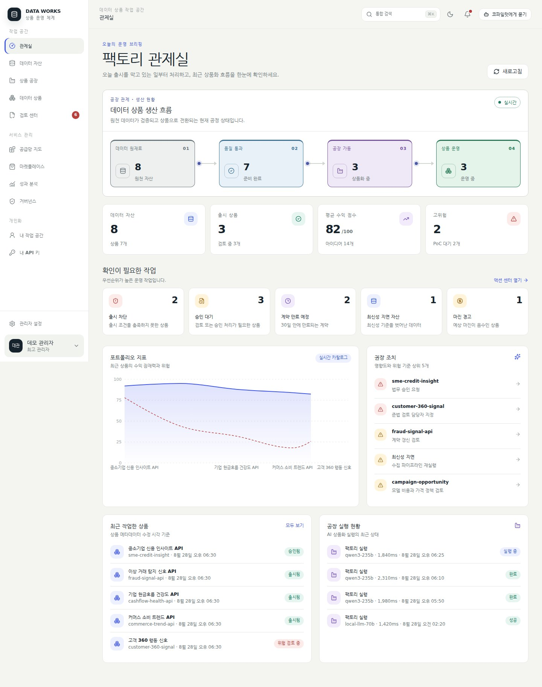
DIGITAL DATA REFINERY
It creates one governed flow for every decision and artifact required to turn scattered data into a product customers can use.
Assess freshness, completeness, schema, and documentation to identify product-ready assets.
Assets · ReadinessUse the AI factory to turn customer problems, value, pricing, and success criteria into a blueprint.
AI Factory · CanvasInspect readiness, risk, approvals, and evidence, then show the missing condition and next action.
Release Gate · EvidenceContracts and operations continue through backend APIs. The workspace shows contract data, while usage and revenue tabs are clearly marked as extension previews.
Contract · Runtime · ValuePRODUCTION FLOW
Every stage reports complete, in-progress, warning, or blocked status, making bottlenecks immediately visible.
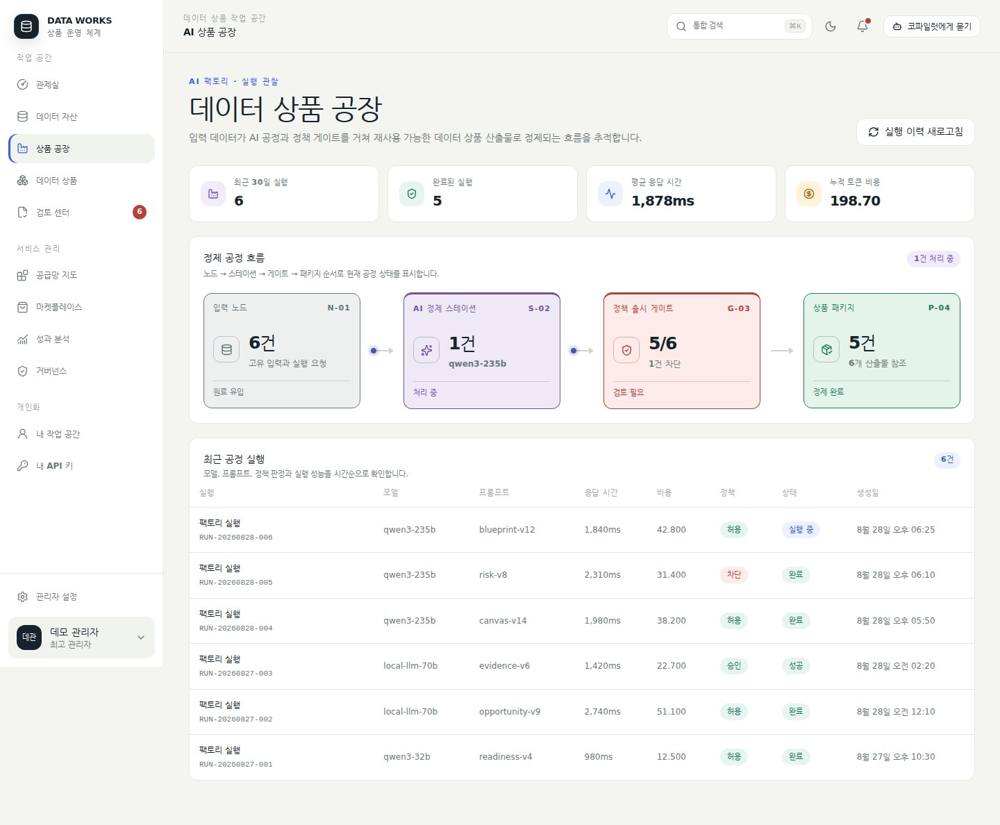
FACTORY FLOOR
Yes. Model, prompt version, latency, tokens, cost, and evaluation results are recorded for a reproducible product process.
RELEASE GATE
Yes. Instead of a generic error, the gate visualizes every condition, overall readiness, and the exact action required.
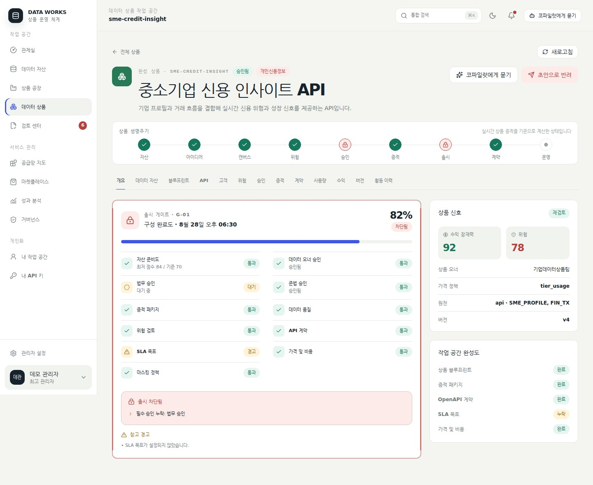
REAL PRODUCT SCREENS
These are direct captures from the v0.9.32 service using fictional demo data; no customer or production data is included. Select any image to enlarge it.
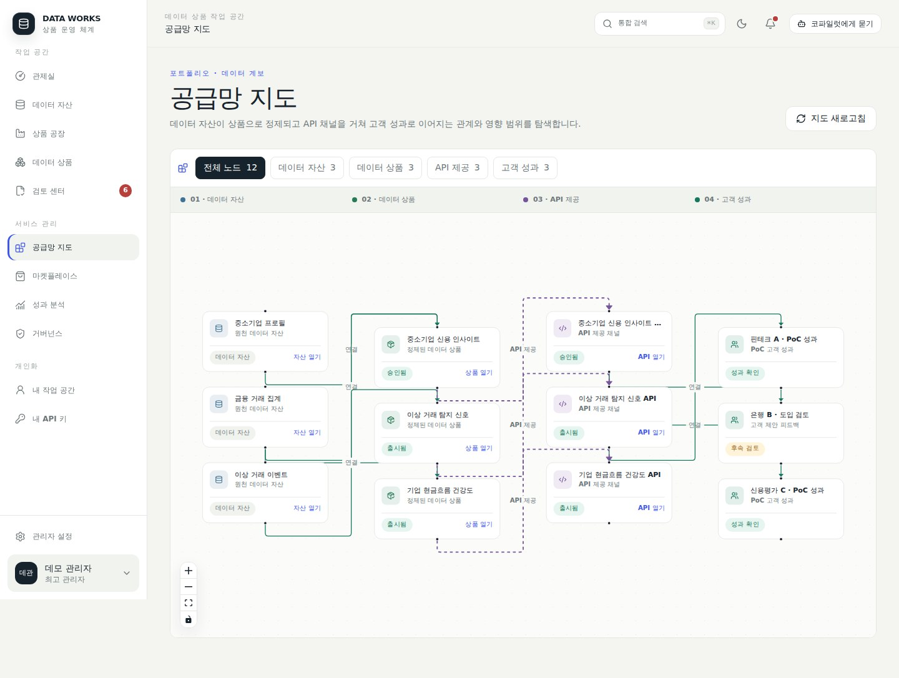
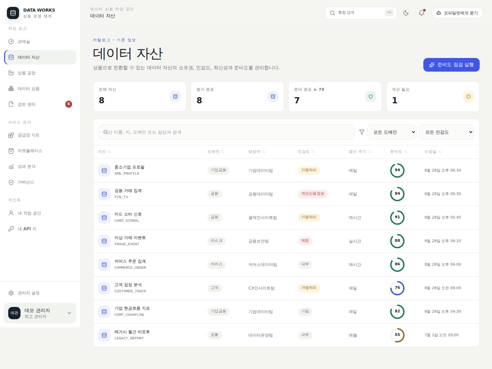
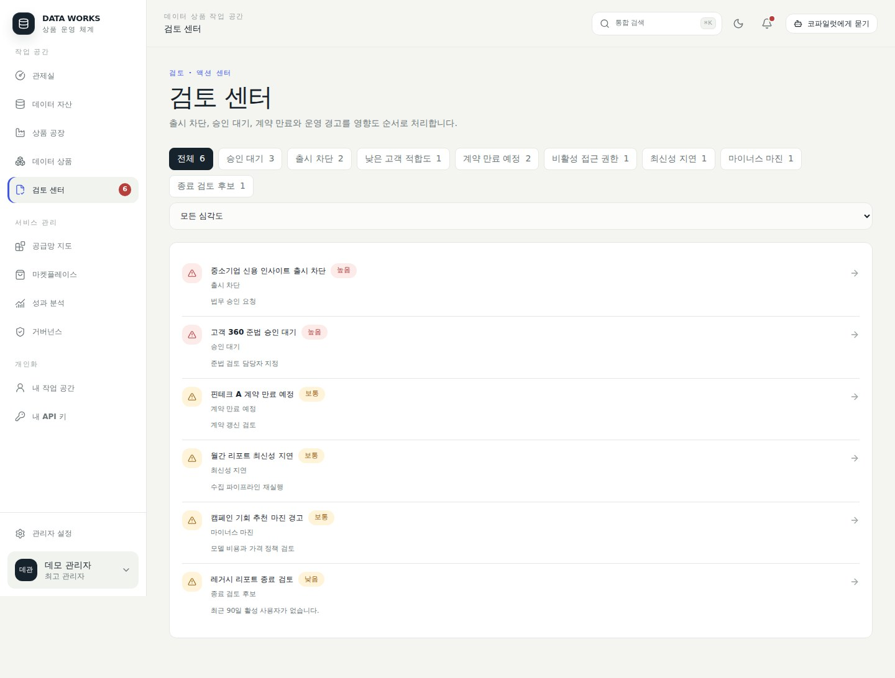
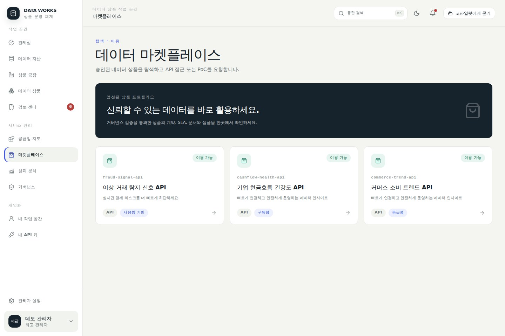
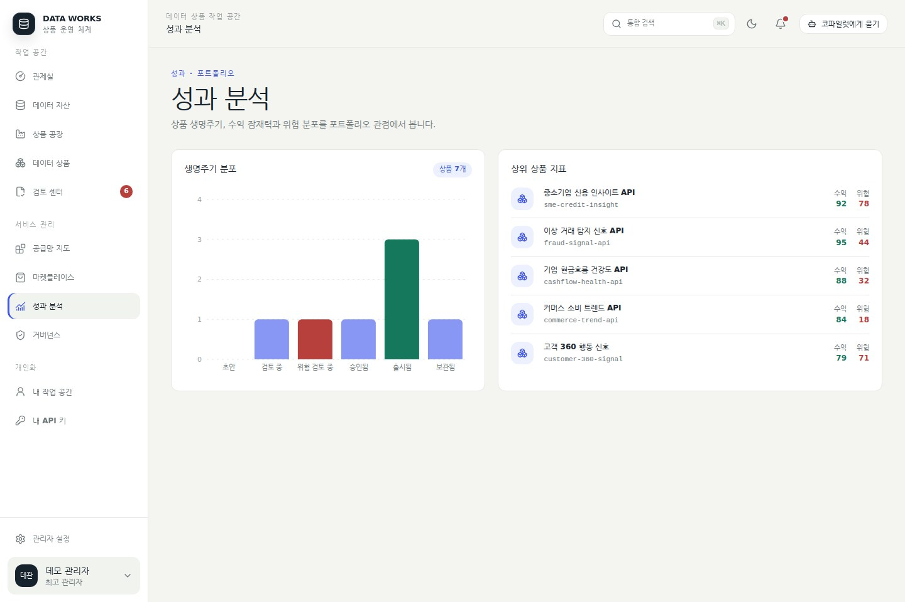
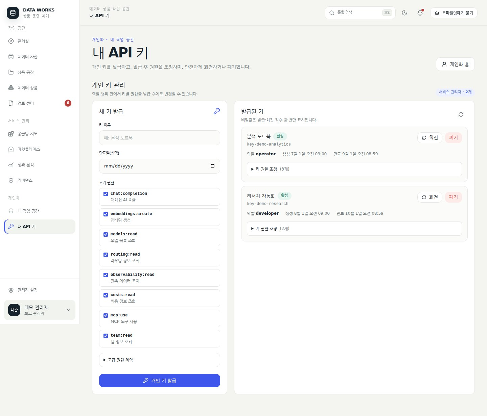
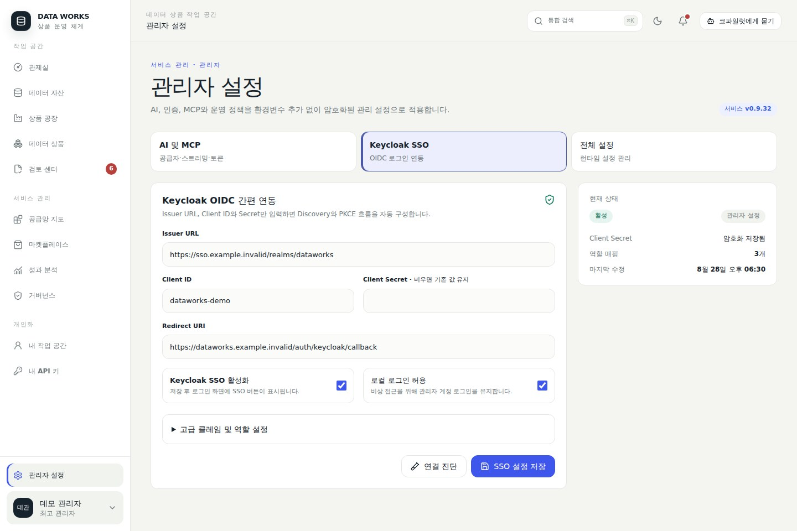
COMPLETE SCREEN ATLAS
Desktop and mobile captures adapt to your viewport. Extension preview honestly marks work modules that are not yet interactive.
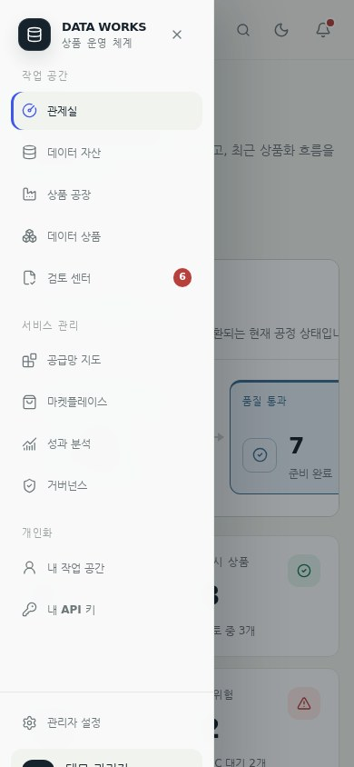
IDENTITY · KEYS · GOVERNANCE
Service connections live in administration; personal work and API keys live in personalization. Roles and key policies remain adjustable.
Read the administrator guide →Enter the issuer URL, Client ID, and Secret to configure discovery and PKCE login.
Change scope, IP, model, provider, budget, and expiry, then rotate while preserving policy.
Manage streaming defaults, model policy, and token limits, then connect with OpenAPI and MCP.
OFFLINE READY
Yes. Import the single Docker image archive and supply four environment variables. The frontend needs no CDN or external font at runtime.
POSTGRES_DSNBOOTSTRAP_ADMINBOOTSTRAP_ADMIN_PASSWORDENCRYPTION_KEY# Load the image archive
gunzip -c dataworks-v0.9.37.tar.gz | docker load
# Start with four required variables
docker run -d --name dataworks -p 8080:8080 \
-e POSTGRES_DSN \
-e BOOTSTRAP_ADMIN \
-e BOOTSTRAP_ADMIN_PASSWORD \
-e ENCRYPTION_KEY \
dataworks:v0.9.37QUICK ANSWERS
Direct answers to the operational, security, and integration questions teams ask before adoption.
It connects discovery, readiness, risk, approvals, evidence, contracts, and delivery as APIs or reports in one product-centered workspace.
Yes. Transfer the single Docker image archive and configure PostgreSQL, a bootstrap administrator, and an encryption key.
It checks asset readiness, owner, legal and compliance approvals, the Evidence Pack, expiry, and operational settings, then explains each blocker.
Yes. Keycloak OIDC and PKCE are supported. Personal key permissions can be edited after issuance and preserved during rotation.
AI streams by default and accounts for up to 262,144 tokens. OpenAPI 3.1, Swagger, and MCP connect external tools.
START THE REFINERY